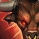
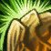
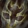
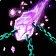

Shaman
Patch Notes
 Balance Changes
Balance Changes
-
 Spirit now increases Spell Haste for all classes.
Spirit now increases Spell Haste for all classes. 
Every 1 Spirit increases Spell Haste by 0.05%, which reduces the cast time of spells and the Global Cooldown. The Global Cooldown cannot be reduced below 1 sec. Does not affect melee or ranged attack speed.
(350 Spirit would equal around 17% spell haste - making a 2.5 sec spell around 2.13 sec.)
Note - It's modest but has an impact and follows the TBC spell haste model. Details on main page.
 New Spells and Abilities
New Spells and Abilities
-

Provoke is now trainable at level 30:
-
Taunts the target to attack you, but has no effect if the target is already attacking you. 10 sec cooldown.
-
 Wind Shock is now trainable at level 10:
Wind Shock is now trainable at level 10:
-
Buffets the target with a gust of wind, causing no damage but interrupting spellcasting and preventing any spell in that school from being cast for 2 sec. 6 sec cooldown.
Note - In early WOTLK, Wind Shear was called Wind Shock, and was changed to not share a cooldown with other Shock spells. For this, I kept it as a Shock for simplicity and felt that the shared CD was a fair risk/reward choice from early WoW.
-

Earth Shield is now trainable at level 34:
-
Protects the caster with 3 ward stones that restore health when struck by a spell, melee or ranged attack. This expends one charge. This effect can occur once every 3 sec. Only one Elemental Shield can be active on a target at a time.
-
Water Shield is now trainable at level 48:
-
The caster is surrounded by 3 globes of water. When a spell, melee or ranged attack hits the caster, mana is restored. This expends one charge. This effect can occur once every 3 sec. Only one Elemental Shield can be active on a target at a time.
-

Totemic Projection is now trainable at level 40:
-
Relocates your active totems to the specified location.
 Hero's Journey
Hero's Journey
Upon reaching level 60, the Shaman goes on a pilgrimage to learn the Bind Elemental spell:

Bind Elemental
-
Binds the target hostile elemental for up to 50 sec. The bound unit is unable to move, attack or cast spells. Any damage caused will release the target. Only one target can be bound at a time.
Balance Changes Key

 labels the expansion Blizzard made that change.
labels the expansion Blizzard made that change. labels an idea Blizzard made during SoD.
labels a new idea I came up with.Thanks for exploring! - Mynta | Aggrophobia, fear-bombing mobs since 2009, Andorhal PvP | NA (@mynlol on Discord)
labels an idea Blizzard made during SoD.
labels a new idea I came up with.Thanks for exploring! - Mynta | Aggrophobia, fear-bombing mobs since 2009, Andorhal PvP | NA (@mynlol on Discord)